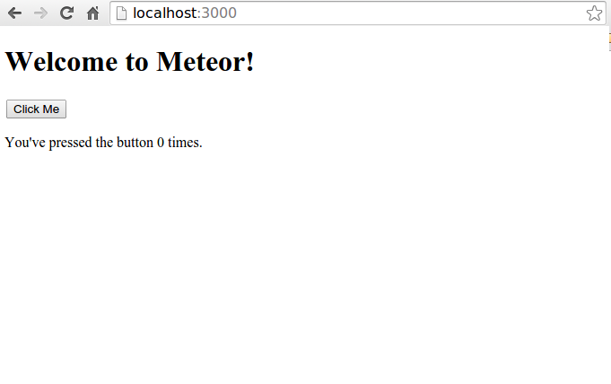

Meteor es una plataforma de código abierto de próxima generación para la creación de aplicaciones web en tiempo real en un tiempo mínimo
fuente: https://blog.openshift.com/day-15-meteor-building-a-web-app-from-scratch-in-meteor/
Meteor es:
No, hay otras plataformas con similitudes a Meteor
mojito ( https://github.com/yahoo/mojito/ )
rendr ( https://github.com/rendrjs/rendr )
MeteorJS es una evolución hacia la sencillez.
No envía HTML a través de la red. Envía datos que se renderizan en cliente.
Tanto la interfaz del cliente como la del servidor usa JavaScript.
Usa la misma API para acceder de forma transparente a su base de datos desde el cliente o el servidor.
En el cliente, se usa pre-extracción (prefectching) y simulación del modelo para conseguir el efecto de una conexión de latencia cero con la base de datos.
El tiempo real es el valor por defecto en todas las capas, desde la base de datos hasta las plantillas
Meteor es de código abierto e integra, mas que sustituye, las herramientas y frameworks existentes
Atmosphere, es el repositorio de paquetes de Meteor. Hay unos 3,300 paquetes
Meteor tambien puede usar cualquiera de los mas de 115,000 paquetes de Node.js
La mejor manera de hacer que algo parezca simple es que realmente sea simple.
Evita repeticiones.
Muchos paquetes disponibles.
Cambio de contexto leve.
Desarrollo más rápido.
...
Usa Suscripciones (websockets) en vez de Peticiones
Por defecto crea “Single Page Apps”, pero puede no hacerlo
$:~> curl https://install.meteor.com/ | sh
(fuente: https://www.meteor.com/install )
$:~> meteor create mad-nodejs
Esto nos crea el directorio mad-nodejs
con todos los ficheros que la aplicación Meteor necesita
Estos son:
$:~> cd mad-nodejs
$:~> meteor
[[[[[ ~/mad-nodejs ]]]]]
=> Started proxy.
=> Started MongoDB.
=> Started your app.
=> App running at: http://localhost:3000/
http://localhost:3000
